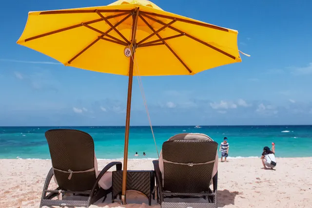
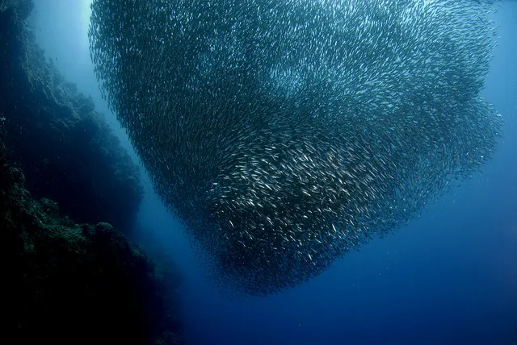
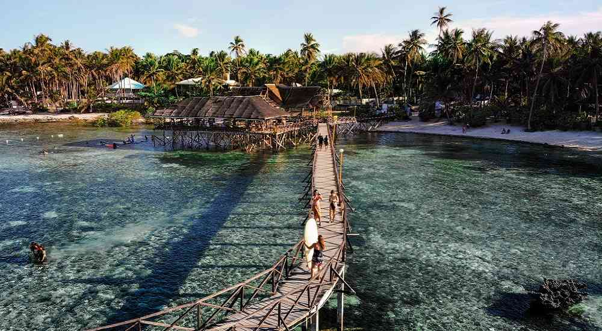

ABOUT PHILIPPINES
HISTORY OF THE PHILIPPINES
Philippines, island country of Southeast Asia in the western Pacific Ocean. It is an archipelago consisting of more than 7,000 islands and islets lying about 500 miles (800 km) off the coast of Vietnam. Manila is the capital, but nearby Quezon City is the country’s most-populous city. Both are part of the National Capital Region (Metro Manila), located on Luzon, the largest island. The second largest island of the Philippines is Mindanao, in the southeast. The Philippines takes its name from Philip II, who was king of Spain during the Spanish colonization of the islands in the 16th century. Because it was under Spanish rule for 333 years and under U.S. tutelage for a further 48 years, the Philippines has many cultural affinities with the West. It is, for example, the second most-populous Asian country (following India) with English as an official language and one of only two predominantly Roman Catholic countries in Asia (the other being East Timor). Despite the prominence of such Anglo-European cultural characteristics, the peoples of the Philippines are Asian in consciousness and aspiration. The country was wracked by political turmoil in the last quarter of the 20th century.
After enduring more than a decade of authoritarian rule under Pres. Ferdinand Marcos, the broadly popular People Power movement in 1986 led a bloodless uprising against the regime. The confrontation resulted not only in the ouster and exile of Marcos but also in the restoration of democratic government to the Philippines. Contemporary Filipinos continue to grapple with a society that is replete with paradoxes, perhaps the most obvious being the presence of extreme wealth alongside tremendous poverty. Rich in resources, the Philippines has the potential to build a strong industrial economy, but the country remains largely agricultural. Especially toward the end of the 20th century, rapid industrial expansion was spurred by a high degree of domestic and foreign investment. That growth, however, simultaneously contributed to severe degradation of the environment. The Philippines also emerged as a regional leader in education during the late 20th century, with a well-established public school and university system, and by the early 21st century the country had one of the highest literacy rates in Asia. The Philippine archipelago is bounded by the Philippine Sea to the east, the Celebes Sea to the south, the Sulu Sea to the southwest, and the South China Sea to the west and north. The islands spread out in the shape of a triangle, with those south of Palawan, the Sulu Archipelago, and the island of Mindanao outlining (from west to east, respectively) its southern base and the Batan Islands to the north of Luzon forming its apex. Historically, the total number of islands in the archipelago was held to be 7,107, but in 2016 the National Mapping and Resource Information Authority of the Philippines announced the discovery of more than 500 previously uncharted islands. The archipelago stretches about 1,150 miles (1,850 km) from north to south, and its widest east-west extent, at its southern base, is some 700 miles (1,130 km). The island of Taiwan lies north of the Batan group, the Malaysian portion of the island of Borneo is to the south of Palawan, and the eastern islands of Indonesia lie to the south and southeast of Mindanao. Only about two-fifths of the islands and islets have names, and only some 350 have areas of 1 square mile (2.6 square km) or more. The large islands fall into three groups: the Luzon group in the north and west, consisting of Luzon, Mindoro, and Palawan, the Visayas group in the centre, consisting of Bohol, Cebu, Leyte, Masbate, Negros, Panay, and Samar, and Mindanao in the south. britannica.com
The Philippines is the only country in Southeast Asia that was subjected to Western colonization before it had the opportunity to develop either a centralized government ruling over a large territory or a dominant culture. In ancient times the inhabitants of the Philippines were a diverse agglomeration of peoples who arrived in various waves of immigration from the Asian mainland and who maintained little contact with each other. Contact with Chinese traders was recorded in 982, and some cultural influences from South Asia, such as a Sanskrit-based writing system, were carried to the islands by the Indonesian empires of Srivijaya (7th–13th century) and Majapahit (13th–16th century); but in comparison with other parts of the region, the influence of both China and India on the Philippines was of little importance. The peoples of the Philippine archipelago, unlike most of the other peoples of Southeast Asia, never adopted Hinduism or Buddhism. brittanica.com
GEOGRAPHY AND ENVIRONMENT
The Philippines is an archipelago, or string of over 7,100 islands, in southeastern Asia between the South China Sea and the Pacific Ocean. The two largest islands, Luzon and Mindanao, make up for two-thirds of the total land area. Only about one third of the islands are inhabited. The topography of the islands is mostly mountainous with narrow to large coastal lowlands, depending on the island. The Philippines is divided into three main geographic areas: the Luzon, Visayas, and Mindanao. The climate of the Philippines is tropical marine with a northeast monsoon from November to April and a southwest monsoon from May to October. The Philippines, like many other tropical island nations, has problems with deforestation and soil and water pollution. The Philippines' problems with air pollution are especially bad because of large populations in its urban center thoughtco.com
As one of the fastest growing countries in Asia, the Philippines faces environmental challenges, with disproportionate impacts on the poor and women. Ineffective management seriously degrades the country’s significant biodiversity resources; water and air pollution levels exceed generally accepted healthy standards; greenhouse gas emissions are increasing from the transport and power sectors; and the country is ranked as one of the world’s most vulnerable to the impacts of environmental disasters. For the Philippines to become a more stable, prosperous and well-governed nation, the country must become more environmentally resilient and better able to cope with the impact of natural disasters and recover quickly. Natural resources play a critical role in the Philippine economy, as agriculture, fisheries, and forestry represent about 10 percent of gross domestic product and account for almost 30 percent of employment. Equally important, natural capital provides energy, water, flood control, storm mitigation and other environmental services that benefit the entire country, including cities. Farming and fishing are major sources of livelihood in rural households in the Philippines. Farming systems in the country are complex, multi-faceted, and geared to promote efficient production and a steady source of income. However, these have also wrought unwanted consequences on the environment, notably soil erosion, water pollution, groundwater depletion, loss of natural habitats, and loss of biological diversity. Farming systems are affected by exogenous environmental factors; in turn, the farming systems also affect agricultural production resource bases. Initiatives from various sectors to mitigate the adverse environmental impacts of farming systems and to protect the agricultural production bases are in place in terms of policies, programs, and action projects. USAID.com
DEMOGRAPHY OF THE PHILIPPINES
The demography of the Philippines records the human population, including its population density, ethnicity, education level, health, economic status, religious affiliations, and other aspects. The Philippines' annualized population growth rate between 2015 and 2020 was 1.63%. According to the 2020 census, the population of the Philippines is 109,035,343. The first census in the Philippines was held in 1591, which counted 667,612 people. The majority of Filipinos are lowland Austronesians, while the Aetas (Negritos) and other highland groups form a minority. The indigenous population is related to the indigenous populations of the Malay Archipelago. Some ethnic groups that had lived in the Philippines for centuries prior to Spanish and American colonial rule assimilated or intermarried. The Philippines has a population of 00,000 Americans.They represent 0.56% of the total population. The ethnic groups include Arabs, Japanese, Han Chinese, and Indians, which form parts of the population. The most commonly spoken indigenous languages are Tagalog and Cebuano, with 23.8 million (45 million speakers as Filipino) and 16 million speakers, respectively. Another 11 indigenous languages have at least one million native speakers: Ilokano, Hiligaynon, Waray, various Bikol languages, Kapampangan, Pangasinan, Maranao, Maguindanao, Kinaray-a, Zamboangueño, and Tausug. One or more of these is spoken as a mother tongue by more than 93% of the population. Filipino and English are the official languages, but there are between 120 and 170 distinct indigenous Philippine languages (depending on expert classifications). wikipedia.com


CULTURE OF THE PHILIPPINES
The Philippines is a country full of love, light, laughter, and food. With a slight influence from America and some parts of Asia, the culture of the Philippines is mainly a blend of Filipino and Spanish Catholic traditions. They have a good eye for fashion and art, and their festivals are to die for. This article will give you a good insight into the Filipino culture.
- Family-Oriented Life
- The Filipinos take pride in their families. Their daily life revolves around close and extended family. Parents, grandparents, uncles and aunts, cousins, and very close friends are all an integral part, moving down to the third and fourth generation as well. All the extended family gathers for significant events of their commune - marriages, circumcisions (for Muslim Filipinos), baptisms (for Catholic Filipinos), etc. Godparents, in Catholic communities, are also a central part of a child’s upbringing. The families celebrate festivals and holidays together, emphasizing spending more and more time with each other.
- Filipino Values
- Society norms and values are of utmost importance in the Philippines. Filipino values are primarily rooted in relationships and societal obligations. Children are taught to be respectful from the early stages of their life, by introducing phrases ‘po’ and ‘opo’ when talking to adults. Societal and group acceptance is very much sought after in Filipino society. Attending to what people think and respecting everyone is a vital part of Filipino values.
- Religion
- Filipinos take pride in their religion. While most Filipinos practise Christianity as their religion, Islam and other indigenous faiths are also seen in movement. Their religious spirit can be witnessed during festivals such as Ati-Atihan, Kaamulan, Panabenga, and the famous 3-month-celebration for Christmas. Jesus’ birthday is a massive fiesta in the Philippines. The celebrations start in October with decorations and music and peak in December with carols, mass, and midnight feasting. Other than festivals, Filipinos display their religion’s symbol outside their houses and go to church or mosques at least once a week. The Philippines is accepting of all religions, and every festival or holiday is celebrated with good vibes and energy.
- Customs and Traditions
- Aside from the three-month Christmas celebrations, the Filipinos have a series of different customs and traditions. One of the long-standing Sunday tradition is cockfighting. Albeit it’s considered illegal or cruel in some nations, it is very normal for Filipinos. It is a common sight in the streets and involves gathering, betting, and feasting over Filipino dishes. Speaking of food, another tradition in the Philippines is street parades. Every fiesta involves street parades with designed floats, music, dance, and delicious local delicacies. No festival is complete without a street parade extravaganza. Filipinos also have customs regarding marriage, family visits, and gatherings. They love spending time at a beach, and it is a common sight to witness a big Filipino clan (extended family, friends, neighbours) chilling and vibing near the ocean.
- Cuisine
- The cuisine of the Philippines reflects influences like Spanish, Indian, Chinese, and of course, native indigenous flavours. They typically have six meals- breakfast, lunch, and dinner, accompanied by a snack after each meal. Whether it's a festival or a typical day, Filipinos love to eat. Rice is their staple food and is usually consumed alongside other dishes. Some of the popular dishes here are adobo (a meat stew made from pork or chicken), lechon baboy (roasted pig), paksiw (fish or pork, cooked in vinegar and water with some spices like garlic and pepper), and sinigang (tamarind soup with a variety of pork, fish, or prawns).
- Arts in the Philippines
- Arts in the Philippines gives a good insight into the cultural diversity of the nation. All areas like music, dance, theatre, paintings, and literature are very much part of the Filipino culture. Filipinos are incredibly talented in music, and subsequently, dance. Even in the 21st century, folk music and dances have not lost momentum. There are various groups like Filipinescas, Barangay-Barrio, Hari Raya, the Karilagan Ensemble, who perform folk music and dance. holidify.com
TOURIST ATTRACTIONS
LUZON
VISAYAS



MINDANAO
